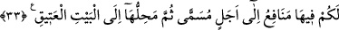
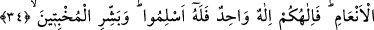
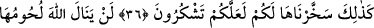

KURBANLARIN NE ETLERİ
NE KANLARI
ALLAH’A ULAŞIR
33. Onlarda (kurbanlık hayvanlarda veya hac fiillerinde) sizin için belli bir süreye
kadar birtakım yararlar vardır. Sonra bunların varacakları (biteceği) yer, Eski Ev’e
(Kâbe’ye) kadardır.
34. Biz, her ümmete -(Kurban kesmeye uygun) hayvan cinsinden kendilerine rızık
olarak verdiklerimiz üzerine Allah’ın adını ansınlar diye- kurban kesmeyi gerekli
kıldık. İmdi, İlâhınız, bir tek İlâh’tır. Öyle ise, O’na teslim olun. (Ey Muhammed!)
O ihlâslı ve mütevazi insanları müjdele!
35. Onlar öyle kimseler ki, Allah anıldığı zaman kalpleri titrer; başlarına gelene
sabrederler, namaz kılarlar ve kendilerine rızık olarak verdiğimiz şeylerden (Allah
için) harcarlar.
36. Biz, büyük baş hayvanları da sizin için Allah’ın (dininin) işaretlerinden
(kurban) kıldık. Onlarda sizin için hayır vardır. Şu halde onlar, ayakları üzerine
dururken üzerlerine Allah’ın ismini anınız (ve kurban ediniz). Yan üstü yere
düştüklerinde ise, artık (canı çıktığında) onlardan hem kendiniz yeyin, hem de
ihtiyacını gizleyen-gizlemeyen fakirlere yedirin. İşte bu hayvanları biz,